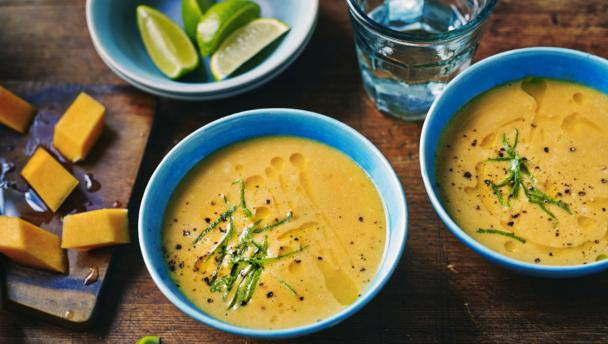

Butternut Squash And Lime Soup

Description
This quick, simple recipe makes a big batch of healthy butternut squash soup.
It freezes brilliantly too.
Perfect with bread for a speedy make-ahead meal.
Ingredients
- 2 tbsp olive oil
- 50g/1¾oz butter
- 200g/7oz onion, finely sliced
- 900g/2lb butternut squash, peeled, seeds removed and cut into 1cm/½in cubes
- salt and freshly ground black pepper
- 2 vegetable stock cubes
- 750ml/1¼ pint milk
- 1 lime, juice only
Steps
- Heat the olive oil and the butter in a large saucepan,
add the onion, cover and fry gently for 3-4 minutes.
- Add the butternut squash and continue to cook for a further 2-3 minutes.
Season to taste with salt and freshly ground black pepper.
- Add the vegetable stock cubes with 750ml/1¼ pint water and the milk and bring to the boil.
Reduce to a simmer and cook for six minutes, or until the butternut squash is tender.
- Transfer to a blender and pulse until smooth.
- Taste, and add more salt and pepper if required. Finish with a little lime juice.